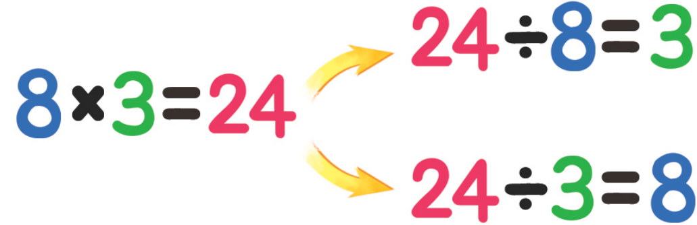
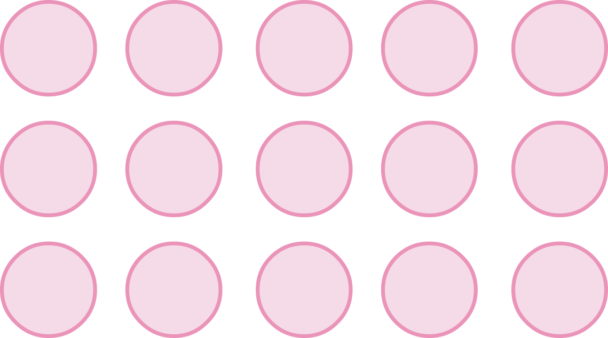

- 개념정리
- 1
- 2
- 3
- 4
- 5
- 6
-
곱셈식을나눗셈식을 2개로
-
1 그림을 보고 에 알맞은 수를 써넣으세요.
6×2＝1212÷＝6212÷＝26 -
2 직각삼각형을 모두 찾아 표 하세요.
-
3 모눈종이에 모양과 크기가 다른 직각삼각형을 3개 그려 보세요.
-
4 삼각자를 이용하여 주어진 선분을 한 변으로 하는 직각삼각형을 그려 보세요.
꾸러미 1 -
5 세 삼각형의 같은 점과 다른 점을 써 보세요.

-
같은 점예직각삼각형입니다.
-
다른 점예변의 길이가 서로 다릅니다.
-
-
6 다음 그림에서 찾을 수 있는 크고 작은 직각삼각형은 모두 몇 개인지 구해 보세요.
 개5
개5